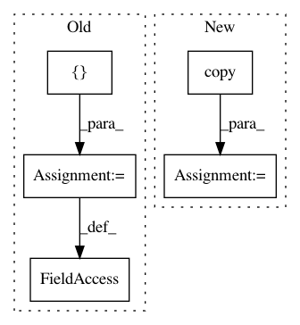

1b6587331ec77d295e2261de12e13974b7d1a46a,aif360/algorithms/inprocessing/meta_fair_classifier.py,MetaFairClassifier,fit,#MetaFairClassifier#,46
Before Change
PrejudiceRemover: Returns self.
data = np.column_stack([dataset.features, dataset.labels])
columns = dataset.feature_names + dataset.label_names
train_df = pd.DataFrame(data=data, columns=columns)
x_train = dataset.features
//print([dataset.favorable_label])
y_train = np.array([1 if y == [dataset.favorable_label] else -1 for y in dataset.labels])
x_control_train = np.array(train_df[self.sensitive_attr])
//print(x_train, y_train, x_control_train)
all_sensitive_attributes = dataset.protected_attribute_names
if not self.sensitive_attr:
self.sensitive_attr = all_sensitive_attributes[0]
model_name = self.obj.getModel(self.tau, x_train, y_train, x_control_train)
self.model_name = model_name
return self
def predict(self, dataset):
After Change
x_train = dataset.features
y_train = np.array([1 if y == [dataset.favorable_label] else
-1 for y in dataset.labels])
x_control_train = x_train[:, sens_index].copy()
self.model = self.obj.getModel(self.tau, x_train, y_train,
x_control_train)
In pattern: SUPERPATTERN
Frequency: 3
Non-data size: 5
Instances
Project Name: IBM/AIF360
Commit Name: 1b6587331ec77d295e2261de12e13974b7d1a46a
Time: 2018-10-16
Author: shoffman@ibm.com
File Name: aif360/algorithms/inprocessing/meta_fair_classifier.py
Class Name: MetaFairClassifier
Method Name: fit
Project Name: rasbt/mlxtend
Commit Name: f1dd50395b7021c5194b3bd8e5c2900873c91f35
Time: 2015-03-13
Author: se.raschka@me.com
File Name: tests/tests_classifier/test_perceptron.py
Class Name:
Method Name:
Project Name: stared/livelossplot
Commit Name: 4e3672726c0c88842b3aa32889767fb48c8fbb29
Time: 2018-11-26
Author: katarzyna.m.kanska@gmail.com
File Name: livelossplot/keras_plot.py
Class Name: PlotLossesKeras
Method Name: on_train_begin